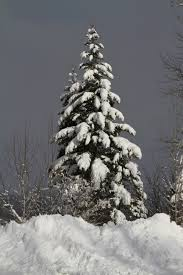

Measuring precipitation
- Hyetograph represents: rainfall intensity as a function of time
- Rain gauges: tend to underestimate, only point measure
- Weather radars: variability shown, but less precise for specific locations
Snow distribution
- Which factors affect the spatial distribution of snow?

Snow and water resources
- How does snow affect the water cycle?
- Storage effect creates highly seasonal hydrological regime
- Long infiltration event during snowmelt.
- Can be the main aquifer recharge event for some catchments (arid mountains)
- How do you link snow depth to the “Snow Water Equivalent” (SWE) of the snowpack?
- density relative to water (< 1) * height (\(m\)) = SWE in \(m\)
- density (\(kg/m^3\)) * height (\(m\)) = SWE in \(kg/m^2\)
- SWE in \(kg/m^2\) = SWE in liters of water / \(m^2\) = SWE in \(mm/m^2\)
Snow and forest
- What is the impact of forest on snow?
- Interception leads to increased sublimation
- Interception leads to threshold effects and time lags in snow depth
- Wind break effect leads to accumulation on one side
- Less radiative cooling can increase melt rates at night
- High albedo when snow has dropped

Snow and climate
- How do glaciers affect the enery-balance downstream? Why does this phenomena happen?
- Katabatic wind
- Radiative cooling of air on the glacier, which is heavier and drops down the valley
- How can a reduced snow covered area impact the climate?
- negative albedo feedback: more heating
Snow and climate
- What are expected effects of climate change on the contribution of snow to river discharge regimes?
- The whole hydrograph shifts to earlier in the year
- Earlier peak discharge
- Lower flows in late summer
Snow and climate

Meltwater infiltration through the snowpack

Snowmelt
- When does snowmelt, as contribution of melting snow to the hydrological cycle, actually start?
- when the snowpack become isothermal: the whole snowpack has some liquid water content and water can start infiltrating into the soil or running of it’s surface
- If the snowpack is deep enough, it doesn’t start on the first day of positive temperature. Why?
- The snowpack takes time to warm. Liquid water takes time to infiltrate through the snowpack and reach its base
Melt rate
- What was the peak snow water equivalent assuming 150cm of snow at a density of 0.33?
- 500mm
- It took about 50 days to melt. What’s the average melt rate?
- 10mm/day
Snowmelt models
Conceptual approaches:
- \(M = C*(T-T_0)\) with C calibrated melt factor and \(T_0\) calibrated temperature threshold
- \(M = (C_1+C_2*u)*(T-T_0)\) with \(u\) wind speed
- \(M = (C_1+C_2*I)*(T-T_0)\) with \(I\) solar short wave radiation
- \(M = C_1*(T-T_0)+C_2*I*(1-\alpha))\) with \(\alpha\) snow albedo
Other option: energy balance model
Further info: Different models for snowmelt - T. Schuler UiO
Vegetation’s impact on hydrological response
- Transpiration
- Storage of water
- Higher infiltration in the root zone
- Interception

Evapotranspiration
- What is the difference between potential and actual evapotranspiration?
- Potential evapotranspiration only depends on energy input. It is the ET when the soil is wet
- Actual evapotranspiration is limited by soil moisture and can be much smaller
- Typical monthly values around the world
- How can you reduce evaporation from bare soil?
- Cover it
- Create a wind break
Interception losses
- Interception losses are due to
- a: evaporation
- b: transpiration
- c: streamflow
- d: none of the above
- Answer: a
How can those properties be useful with regards to green SW infrastructure?
- Interception provides storage and mitigates the effect of heavy precipitation
- Enhanced root zone infiltration
- Evapotranspiration helps drying saturated ground after a heavy rain event
Other advantages of trees in urban areas?
- Shading limits heat island effect due to dark urban surfaces. Evapotranspiration too
- Evergreen trees can have a warming effect in winter
- Windbreak, air purification?
- Beautiful, can have edible by-products!
What are key problems with trees
- They like water pipes
- Branches can break on large less managed trees
- Leaves litter need to be taken care of with deciduous trees
Take home messages

- Hyetograph: precipitation intensity versus time
- Precipitation is non uniform. Radar measurements can help when station density is low.
- Interception: temporary storage of precipication by vegetation
- Evapotranspiration (ET): sum of all vaporization processes in a catchment (open water, soils, transpiration from plants)
- Actual ET in a catchment can be estimated by closing the hydrological cycle
- Potential ET: only depends on energy input. It is the ET if the soil is wet
- Actual ET <= Potential ET. Substantial difference in moisture limited catchments
- Snow storage measured in SWE: Snow Water Equivalent
- Snowmelt models either energy-balance or degree day approach
Book chapters
Elements of physical hydrology. Chapter 2
Hydrology in Practice. Chapers 2, 3, 4, 9, 11
A good application of hydrological science to complex water resources pbs.
- 05: The mysterious dispoapearance of a river in india
- 26: eucalypts trees pumping water out of the aquifer.
- 27: need a common conceptual understanding of what is going on with the river
- 29: put all hypotheses on the table. test all different perceptions of people (good to involve people)
Sally Thompson “Breakthroughs in Complex Water Systems”
- 31: First pb: climate change, stopped raining. second hypo: too form third: connectiviy in the channel lost, final related to land use change and eucapypts. scientists hypo: too much gw abstraction
- 33: no change in evapotranspiration according to data
- 34: no long term change in rainfall
- 37: expansion of forestry
- 50: prob 50% of decrease from gw level drop, 50% from forestry
- 39: difficult to get hold of good depth to gw data
She presents some examples from california, and mediteranean climates in general. Impact of snowpack too. Shift of hydrological towards earlier in the season is not what we want or what forests want. Impact of rooting depth on the impact of cliamte change on forest. Field capacity and it’s control on plant water use. Wilting point to define macropores, rocks in the soil…
- 33: Natural pollution in sweden. influence of depth to water table riparian controls are the place to begin when looking at water quality in streams start simple and then see what we have to explain afterwards.